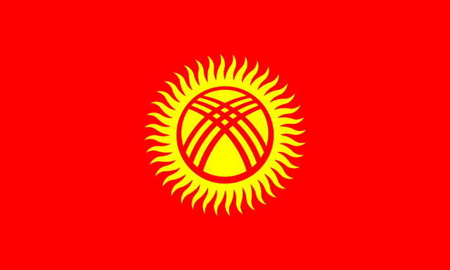

"Президент Кыргызской Республики Садыр Жапаров подписал закон КР "О внесении изменений в закон "О государственных символах Кыргызской Республики", который был принят Жогорку Кенешем 20 декабря 2023 года. Закон принят в целях совершенствования одного из главных государственных символов КР – флага страны. Принятым законом изменена форма лучей солнца на флаге Кыргызской Республики из волнообразных на прямые", – сообщил пресс-секретарь президента Читайте больше: https://www.nur.kz/world/2052210-flag-kyrgyzstana-ofitsialno-izmenen-prezident-zhaparov-podpisal-zakon/